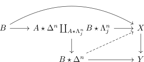

right slice functor from twisted arrows and monomorphisms plus inner fibrations
Proposition
Let $\mathrm{sSet}$ be the category sSet,

be morphisms such that
- $i$ is a monomorphism
- $f$ is an inner fibration
Then the induced map for the slice and pushout
\begin{align*}
X_{\varphi /} \rightarrow X_{ \varphi i /} \times_{Y_{f \varphi i /}} Y_{ f \varphi/ }
\end{align*}
is a left fibration
Proof
Given a lifting problem
\begin{displaymath}
\begin{tikzcd}
\Lambda_j^n \arrow[]{d}{} \arrow[]{r}{} & X_{\varphi/} \arrow[]{d}{} \\
\Delta^n \arrow[dashed]{ru}{} \arrow[]{r}{}& X_{\varphi/} \times_{Y_{f \varphi \iota}
\end{tikzcd}
\end{displaymath}of a left horn inclusion we may reduce it to

(cf. bijection between lifting problems of join slice adjunction)
since $\iota: A \rightarrow B$ is by assumption a monomorphism and left horn inclusion are left anodyne maps we conclude that
\begin{align*}
A \star \Delta^n \coprod_{A \star \Lambda_j^n} B \star \Lambda_j^n \rightarrow B \star \Delta^n
\end{align*}
is an inner anodyne map (cf. induced map for the slice and pushout as inner anodyne)
Since $f$ is an inner fibration, we conclude that there exists a lift